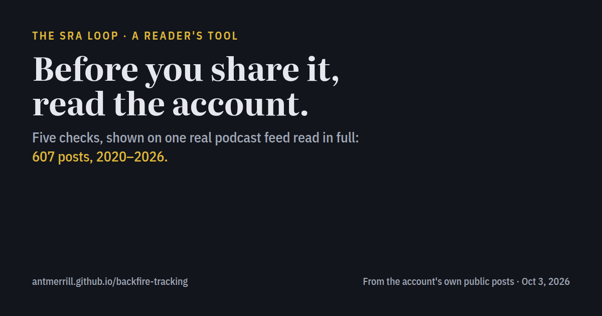

Before you share it, read the account
A shocking clip arrives with a confident caption and thousands of likes. Before passing it on, it's worth a few minutes on the account that posted it. Here are five things to look at, each shown on one real podcast feed we read in full: 607 posts, 2020 to 2026.

The example is a podcast that, since July 2026, has hosted voices from the circle of online accounts this site calls the SRA Loop. We're not naming it, because this page isn't about one person. It's about the patterns, so you can recognize them anywhere.
1. Is it one feed wearing two names?
Instagram lets two accounts publish a single post together, so it shows up on both. That's normal for a real collaboration. In the example, the host's personal account and the podcast's account co-published almost everything:
| Year | Posts | Co-published with the host's own second account |
|---|---|---|
| 2021 | 89 | 0 |
| 2022 | 116 | 74 |
| 2023 | 39 | 8 |
| 2024 | 100 | 98 |
| 2025 | 97 | 97 |
| 2026 (to Oct 1) | 154 | 146 |
When two accounts that look like separate voices are run by the same person, the post seems to come with twice the agreement it really has.
How to check: tap the names at the top of a post ("X and Y" or "X and 2 others"). Instagram lists every co-author. Then look at each account's bio for "my podcast", "my page" or the same link.
2. Are the "places" real places?
Anyone can invent a location on Instagram, and it then shows above the post like a place. In the example, 437 of 607 posts carry a location, and nearly all are slogans:
| "Location" on the post | Posts |
|---|---|
| Mk Ultra Testing Facility | 28 |
| End Child Trafficking | 10 |
| Satanic Flea Market | 8 |
| Pedophile State | 8 |
| Epstein Theatre | 6 |
| Epstein Didn't Kill Himself | 5 |
| Mkultrapolis · Freemason Lodge · Disneyland | 4 each |
A location line is a frame put around the content before you've watched a second of it.
How to check: tap the location. A real place has a map and other people's posts from there. A slogan "place" usually has neither.
3. Do different people all look the same?
On the example's podcast account, clip after clip carries one style: a quote in white capitals on red boxes, and subtitles where the word being spoken lights up red. It's the same over different speakers, filmed in different rooms, including clips taken from other creators. Some of the quote cards:
- "I witnessed satanic rituals with child sacrifice and cannibalism…"
- "In MK ULTRA, I was made to eat human flesh…"
- "Stop taking your kids to Disneyland – it's a pedophilic paradise!"
When many different people come out looking and sounding the same, the look belongs to whoever edited them. You're seeing the editor's choices: which sentence goes on the card, what gets cut, what goes in red.
How to check: scroll the account's grid. Count how many different faces share one caption style.
4. What does the account's best "hit" look like?
In the example, a typical post gets about 160 likes. The most-liked post got 105,410 likes and 7,151 comments. It's a speaker saying "I am a survivor of the child snuff industry. There are deep underground military bases…", with no evidence offered in the post. Third place (26,002 likes) is a story about meeting "a dog man… a 'surgical chimera'" in a tunnel.
The most-shared clips from an account like this tend to be its most extreme claims. Popularity tells you about the audience, not about whether a claim is true.
How to check: compare the post in front of you with the account's ordinary posts. If it's one of their rare viral hits, ask why this one traveled.
5. Where did the topic come from, and when?
The order in which words first appear in the example's captions:
- Feb 2021"Trafficking"
- Mar 2021"Satanic", "ritual" and "MK Ultra"
- Apr 2023The first mention of "LDS" or "Mormon"
- Jul–Sep 2026Voices from the SRA Loop appear as co-authors
The Church arrived late in a feed that was already about satanic abuse and mind control. It was added to an existing story, not the source of one.
How to check: scroll to the bottom of the account, or search its posts for a word. When did it start talking about the subject it's now sure about?
To be fair
The example's posting times look like a person's: afternoons and evenings in one time zone, never overnight, no rapid bursts. A real host appears on camera and conducts live interviews. Nothing here shows automated posting. What it shows is how a feed is built.
Some people on these accounts describe abuse. Nothing here judges anyone's experience. The question is how one feed collects those stories, labels them and sends them out.
The five checks
- Tap the names: is it one feed wearing two names?
- Tap the location: is it a place, or a slogan?
- Scroll the grid: do different people all look the same?
- Compare: is this post one of the account's rare viral hits?
- Search back: when did the account start talking about this?
How this was gathered
On October 3, 2026 the example account's public profile was scrolled from top to bottom twice, and Instagram's own responses were saved unaltered. The two passes agree on every post they share, and the second reached the end: 607 posts, the number the profile shows. Every count above comes from those records. Keyword counts are whole-word matches in the post captions.
The story this circle has been passing around: The SRA Loop: a reader's guide.